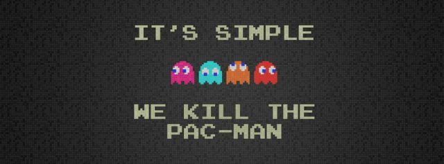
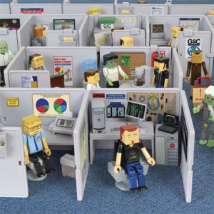
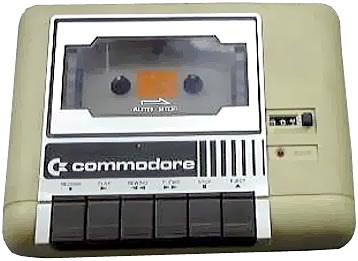

1 vs 100 ⋅
Alarm Clocks ⋅
Band Hero ⋅
Batman: Arkham City ⋅
Blur ⋅
Brink ⋅
Call of Duty V: World at War ⋅
Dance Dance Revolution ⋅
Data Warehouses ⋅
Gotham City Impostors ⋅
Guitar Hero 5 ⋅
Guitar Hero III: Legends of Rock ⋅
Guitar Hero World Tour ⋅
Guitar Hero: Aerosmith ⋅
Guitar Hero: Metallica ⋅
Guitar Hero: Smash Hits ⋅
Guitar Hero: Van Halen ⋅
MAG (Massive Action Game) ⋅
Major League Gaming ⋅
Mobile Platform As A Service ⋅
Mortal Kombat 9 ⋅
Network Monitoring Systems ⋅
Parking Meters ⋅
Real-time Ad Delivery Systems ⋅
Saints Row: The Third ⋅
Section 8 ⋅
Slot Machines ⋅
Social Networks ⋅
Transformers 2 ⋅
Vending Machines ⋅
Video Broadcast Systems ⋅
Video Games ⋅
Virtual Machine Clouds ⋅
Windows Apps ⋅
Windows Networks
Like I said, I love making things
I've worked with a lot of software teams
Some are good, a few are great
Creating software is like, really, really hard
We're not creating widgets
It's inherently chaotic
Our tools are constantly changing
Our requirements are constantly changing
Everyone involved is highly creative
All great teams have a few common components
The right people
Aligned
Empowered to deliver
Organizational support framework
Let's break that down
Great People
Great doesn't mean "rockstar" or "ninja"
Great doesn't mean "never goes home"
What does great mean?
Productive
Empathic
Enthusiastic
Relentlessly Self Improving
Humble
The best teams are heterogeneous
Skill level
Interest
Past Experience
Area of discipline
Alignment
The best teams are aligned with eachother
Teams should self-organize
Reality: Everyone is a product developer
The best teams are aligned with the goals of the organization
Share AS MUCH information as possible
Share AS MUCH information as possible
Rule 147: Shitty companies manage by compartmentalizing information
Brand the team
Correction: Allow the team to brand itself
Name the project
Print shirts!
Personalize Github organizations, etc.
We're trying to build a state of shared vision
We're trying to build trust
We're trying to build focus
This is why startups work
Empowerment
Ideally teams operate autonomously
They pick their own tools
They create their own processes
They report their own results
They set their own hours
They self structure
Teams
MUST have authority
to make project decisions
Yep, bad decisions will happen
But it creates a feedback loop
And the solution is to provide better information
With great power comes great responsibility
- Uncle Ben
Tip: Give teams a budget or credit card
(and include some mad money)
Organizational Support
Most software projects are set up to fail

Show me don't tell me
A performance culture where great work yeild great rewards
Take money off the table
Take benefits off the table
Flexible Hours
Be fair
A fancy office

(This is also important for recruiting)
Actively reduce communication overhead
Establish response time expectations
Informal communication builds trust
Minimize out-of-band interruptions
Allow people to take risks
Allow people to learn new things
Give people the freedom to create
Ensure security & IT policies do not impede work
Provide up to date technology

Encourage time off
Act like a group of human beings
How do you lead a great team
A great leader can make all the difference
If you're not technical, don't fake it
Take bullets
Ask questions
Be available for answers.
Don't cancel projects
Don't have back-door meetings
Don't put people on the team who aren't fully invested